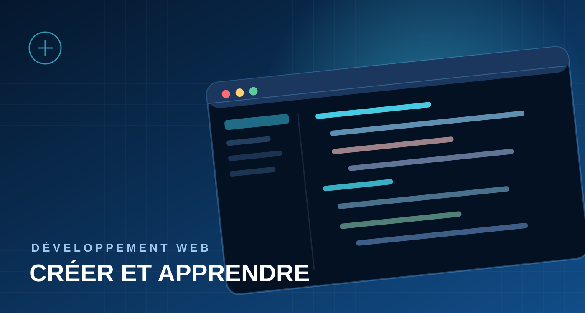
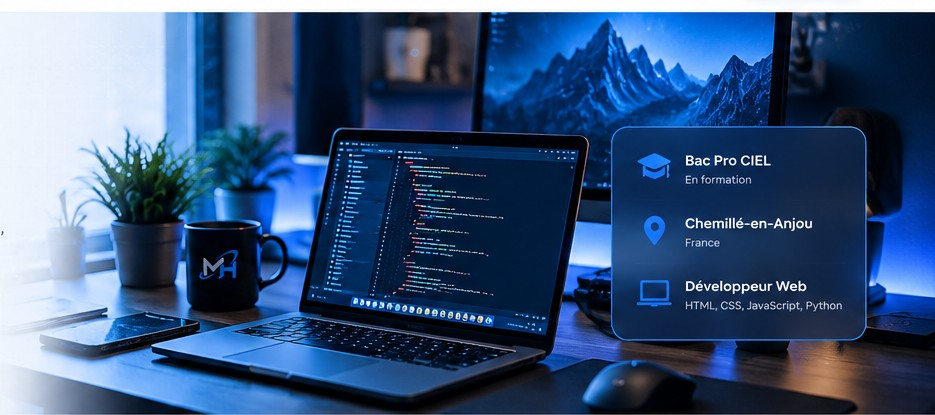
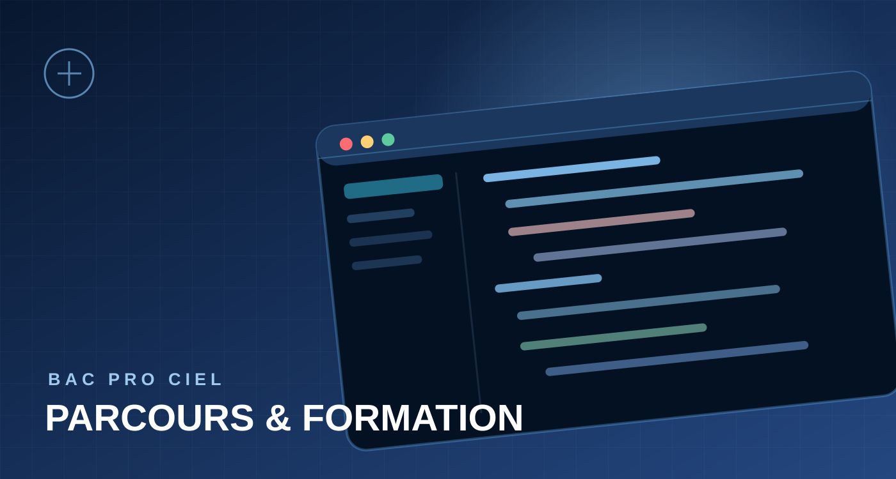
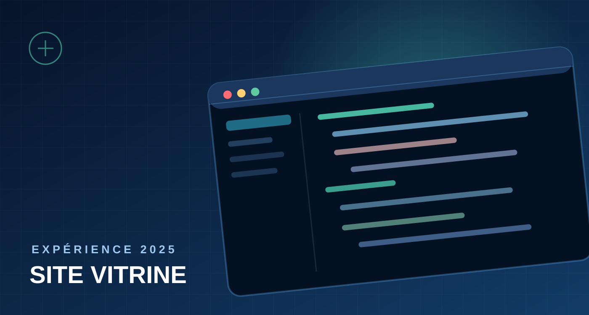
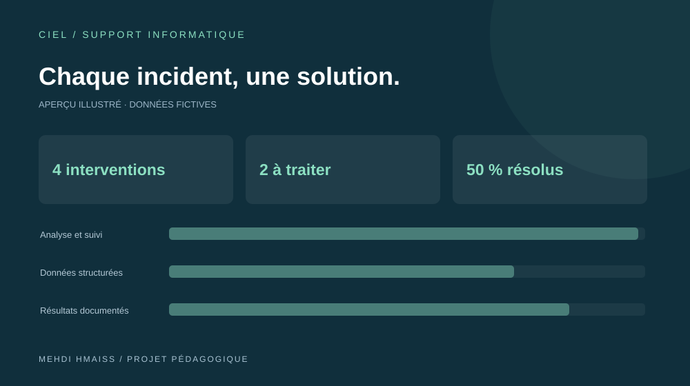
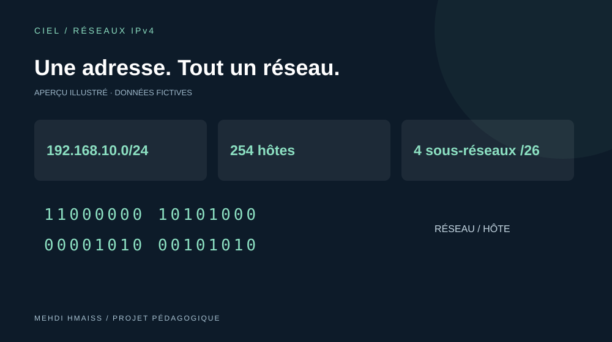
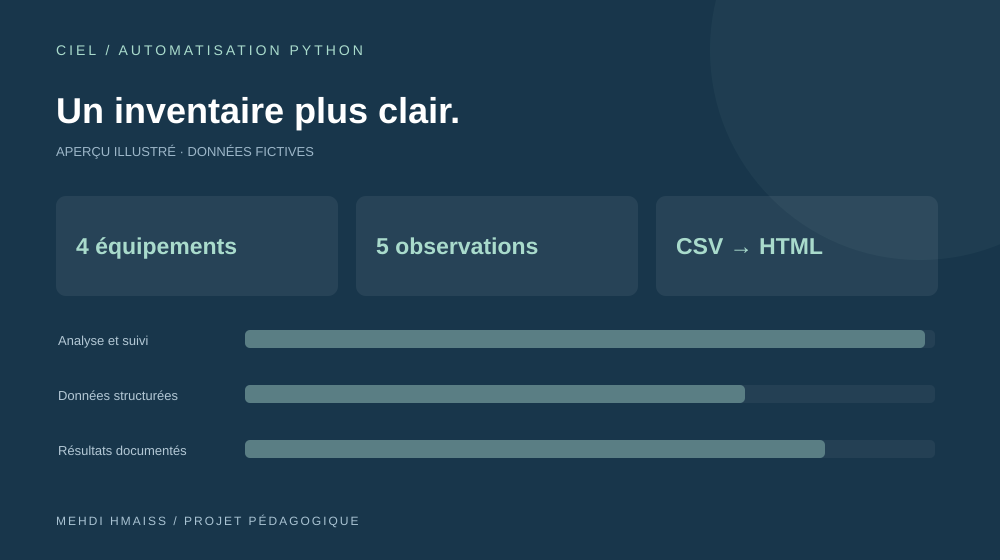
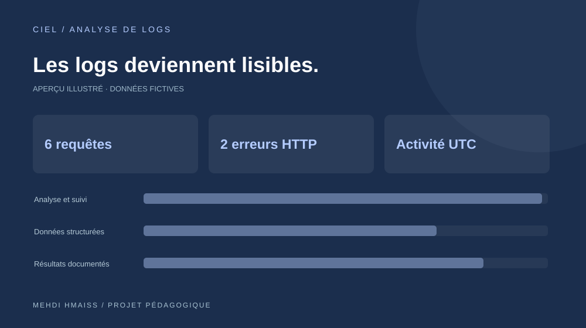
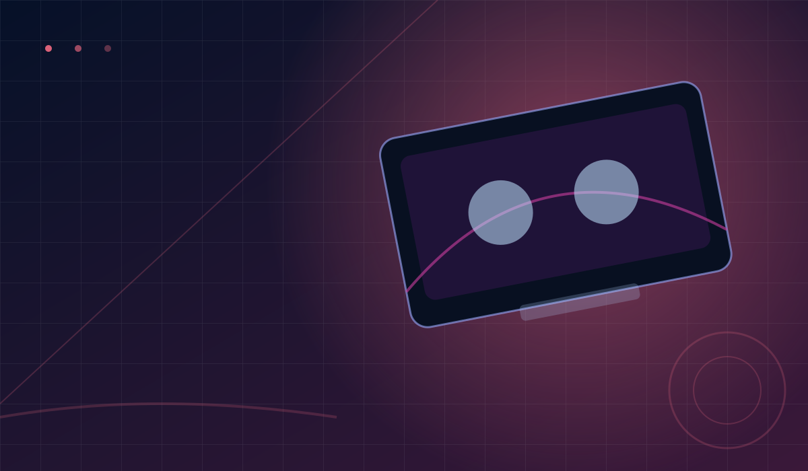
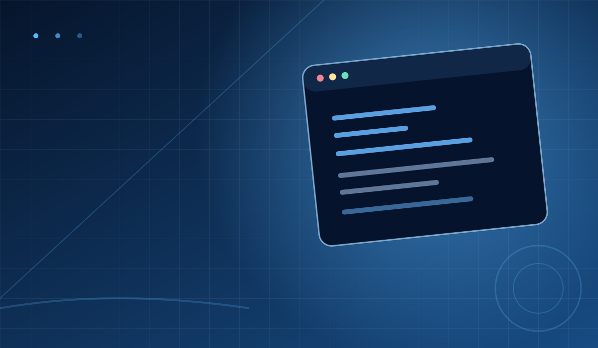

Mon objectif
Intégrer une entreprise pour découvrir le fonctionnement réel d’un environnement professionnel, améliorer mes compétences et participer à des missions adaptées à mon niveau.
PORTFOLIO / DEVELOPPEMENT / CIEL
Chargement de l’expérience…
BONJOUR, JE SUIS
Étudiant en Bac Pro CIEL au lycée de l’Hyrôme, je développe des projets web et j’explore les réseaux et les technologies numériques. Je recherche une PFMP pour apprendre sur le terrain et contribuer avec sérieux.

Je suis étudiant en informatique, basé à Cholet et scolarisé à Chemillé-en-Anjou. J’aime créer des interfaces, chercher des solutions et apprendre par des projets concrets.
J’aime apprendre en pratiquant. Mon objectif est de développer des bases solides en informatique et de gagner en expérience à travers des projets utiles et une PFMP réussie.
 Photographie d’illustration · Unsplash
Photographie d’illustration · Unsplash

Intégrer une entreprise pour découvrir le fonctionnement réel d’un environnement professionnel, améliorer mes compétences et participer à des missions adaptées à mon niveau.

Le développement web, l’organisation des interfaces, la logique, les réseaux, et l’idée de transformer une idée en projet concret.

Une opportunité d’apprentissage, un cadre sérieux, et des personnes auprès de qui progresser. Je suis motivé, appliqué et prêt à m’investir.
MON PARCOURS
Voici une vue rapide de mon parcours actuel et de la période de stage que je souhaite effectuer.
Lycée de l’Hyrôme · Chemillé-en-Anjou
Cybersécurité, informatique, réseaux et électronique avec une progression pratique et technique.
École Polytechnique des Génies · Fès, Maroc
Apprentissage technique et projets pratiques, notamment en développement web.
École Polytechnique des Génies · Fès, Maroc
Du 1er avril au 1er mai 2025 — participation à la création d’un site web vitrine pour l’établissement.
Du 22 mars au 20 avril 2027
Découvrir le monde professionnel, apprendre en entreprise et consolider mes compétences actuelles.
EXPÉRIENCE
Un stage d’un mois en 2025 pendant lequel j’ai pu travailler sur la présentation web de mon établissement.
 EXPÉRIENCE · 2025
EXPÉRIENCE · 2025Dans le cadre de mon stage, j’ai travaillé sur un site web destiné à présenter l’établissement, ses informations et ses activités. Cette expérience m’a permis de mettre en pratique la structuration HTML, la mise en page CSS et les interactions JavaScript.
Cette expérience est distincte de ma formation actuelle en Bac Pro CIEL.
MES COMPÉTENCES
Mes compétences actuelles se concentrent sur les bases solides du web et de la programmation.

HTML / CSS / JavaScript / Python
Structurer des pages web claires, propres et compréhensibles.
Créer des interfaces modernes, responsives et agréables à parcourir.
Ajouter des interactions utiles et rendre une interface plus vivante.
Créer des scripts, pratiquer la logique et développer des petits programmes.
RÉALISATIONS SUR GITHUB
Des outils de support, de réseau et d’analyse, accompagnés de projets web personnels. Chaque réalisation dispose de son code et d’une documentation.

Essayer l’application ↗Suivi des interventions : priorités, statuts, notes de résolution et export CSV. Données conservées dans le navigateur.
Projet pédagogique · Assistance IA

Essayer le calculateur ↗Calcul du réseau, du masque et des hôtes, visualisation binaire et découpage en sous-réseaux. 8 tests automatisés.
Projet pédagogique · Assistance IA

Voir le rapport démo ↗Contrôle d’un inventaire CSV : doublons, adresses IP, champs manquants et RAM. Rapport HTML autonome et 7 tests unitaires.
Projet pédagogique · Assistance IA · Rapport de données fictives

Voir le rapport démo ↗Analyse locale de journaux HTTP Apache : codes de réponse, chemins consultés et activité horaire en UTC. 7 tests unitaires.
Projet pédagogique · Assistance IA · Rapport de données fictives

Un site personnel centré sur l’univers gaming, une identité visuelle et une présentation responsive.
Un exercice de précision développé pour le navigateur, avec un classement configurable via Supabase.
Un prototype d’interface de partage de vidéos avec gestion locale des profils et contenus dans le navigateur.

Un portfolio pour présenter mon parcours, mes compétences, mes réalisations et ma recherche de stage.
Les miniatures sont des aperçus illustrés. Les projets CIEL sont pédagogiques et préparés avec une assistance IA. Les rapports Python en ligne présentent des données fictives ; leur analyse s’exécute localement avec les scripts documentés sur GitHub.
Je souhaite mettre mes compétences en pratique et continuer à progresser au sein d’une équipe.

RESTONS EN CONTACT
Du 22 mars au 20 avril 2027, je recherche une PFMP en informatique. Vous pouvez m’écrire directement via votre messagerie.
CONTACT PROFESSIONNEL
Une question, une proposition de stage ou un échange sur mon profil ? Contactez-moi facilement.